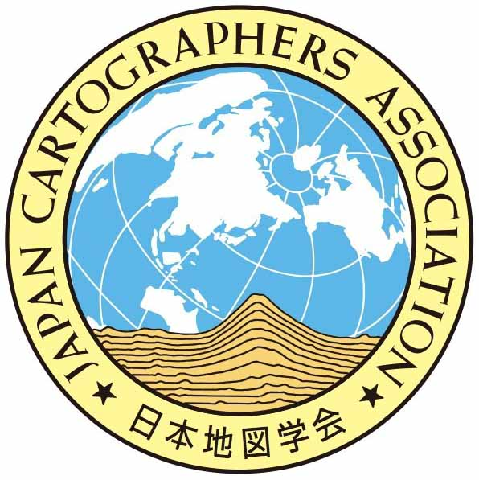

|  |  |
| 【2013年4月より「日本国際地図学会」は「日本地図学会」に名称が変わりました】 | |
| ≪本学会は、 【地理学連携機構】 、 【日本地球惑星科学連合】 に加盟しています≫ |

|
北斗市高台マップ この地図は、北海道地図株式会社のご厚意により、添付地図として複製したものです。 本図を許可なく複製・利用することを禁止します。 |
|
■ ■ ･【お知らせ】−機関誌「地図」51巻1号の発行の遅れについて。（2013/7/16） ･【定期大会】−平成25年度定期大会プログラム（定期大会のお知らせ 第３報）を掲載しました。（2013/7/10） ･【役員】−第26期（2013〜2014年）役員・評議員名簿 を新たに加えました。（2013/7/10） ･【委員会】−第26期（2013〜2014年）委員会委員名簿 を掲載しました。（2013/7/10） ･【専門部会】−「地図と地名専門部会」 を新たに加えました。（2013/6/25） ･【専門部会】−各専門部会の「平成24年度活動報告及び平成25年度活動計画」 を掲載しました。（2013/6/25） ･【定期大会】−平成25年度定期大会会場周辺の宿泊先に関するご案内 を掲載しました。（2013/6/4） |